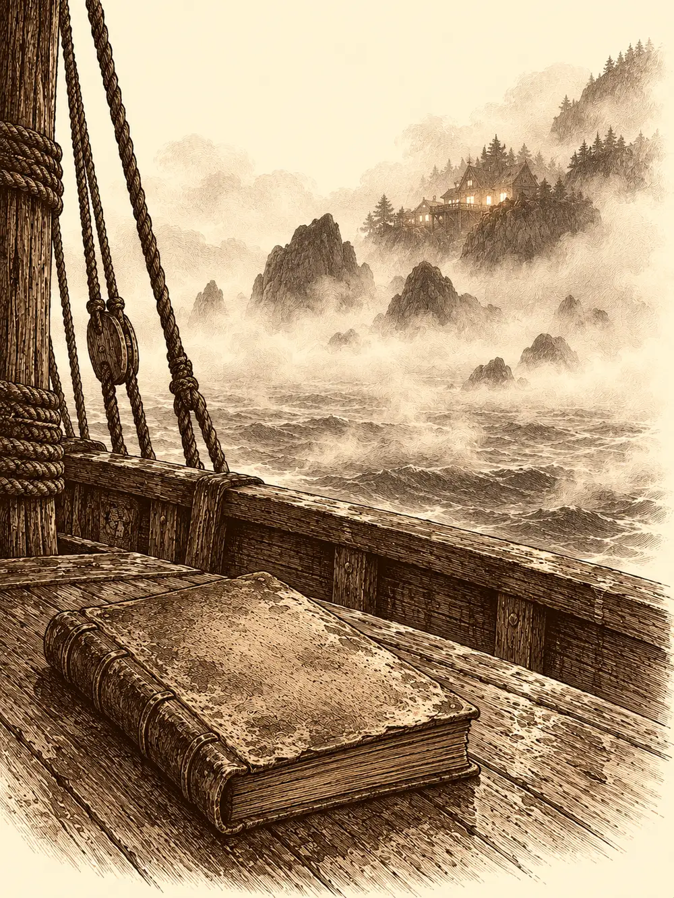

Capítulo 182
Hasta pronto, Kuroto
Libro X · Hasta pronto, Kuroto
Sobre la rama de uno de los árboles enfermos de la calle mayor de Sho, dos gatos de cola partida miraban a la gente colgar farolillos. Uno era Lor Miau, que llevaba años siendo el amo de aquel barrio. La otra era Véspera, que llevaba muy pocos días siendo gata.
"¿Me estás diciendo que todos estos humanos te obedecen?".
"Mira". Lor Miau maulló a una señora que pasaba con una jarra, y la señora se deshizo en mimos y le sirvió leche.
Véspera se lo pensó. Bajó del árbol, se restregó contra las piernas de la misma mujer, ronroneó y levantó una pata. La mujer le dio de comer también a ella. Lor Miau bajó gruñendo a reclamar lo suyo, y durante un buen rato los dos gatos se disputaron los tobillos de aquella pobre vecina, que empezaba a preguntarse qué les pasaba.
Sho estaba de fiesta. Habían despedido a Kurobane hacía pocos días y Sun acababa de levantarse de la cama, todavía con las piernas flojas. Por las calles se cruzaban yokai y humanos sin que nadie echara mano a un arma, y los vecinos paraban a los cazadores para darles las gracias, para abrazarlos, para meterles caramelos en los bolsillos a las niñas.
Sun se encontró a Lea entre la gente, con un bebé en brazos. Era el pequeño Kim, un niño kender que ella había estado cuidando, y todavía no le había salido pelo. Ella quiso saber dónde se había metido tanto tiempo, y él le habló de una nota que le había dejado y de una montaña que le habían plantado encima. Lea le pidió algo fuerte de beber. El bebé acabó en brazos de Hayate, que pidió un té, y el mono se fue en busca de la taberna.
Guxi y Serafina paseaban mirando a sus compañeros.
"Costó mucho tiempo. Hemos perdido mucha gente. Pero al final se logró", dijo él. "Ahora solo me queda cumplir mi otra promesa".
"¿Cuál?".
"Te prometí que te haría la mujer más feliz de Kuroto".
"Ah, eso. Yo pensaba que me ibas a dar el licor que también me prometiste".
"El licor lo tengo en casa. Con tu postre favorito".
Jin y Kazuki, sentados en una rueda de carro, hablaban del país. La guerra estaba ganada, pero Kuroto había quedado débil, y Jin pensaba quedarse para que nadie volviera a intentar lo que habían intentado los tritones. Kazuki, ahora portavoz en la mesa del shogunato, se preguntaba si sus confidentes del plano de las hadas podrían echarles una mano.
Banzo caminaba de la mano de Palayer. Ella no llevaba armadura esa noche sino un vestido, y como hacía fresco se pegaba un poco al goliat, que siempre desprendía calor. Saludaron a Tsugami, que tenía la tienda llena de maletas porque se iba a ver mundo. Banzo llamó a Ushi a gritos, le puso cien monedas de oro en la mano y le pidió que sacara a la calle todos los barriles que tuviera. Al tabernero se le iluminaron los ojos.
Por el rabillo del ojo, el goliat vio unas sombras en un callejón. Donde había shinobi solía haber alguien más. Tiari se dejó ver un instante, apoyada en una pared, y le hizo un gesto que él conocía. Banzo inclinó la cabeza y ella se fue. Palayer le notó algo raro en la sonrisa, una tristeza que él escondía mirando hacia otro lado.
Delante de la taberna de Ikari, Shizuka, Arwen y Channi le reclamaban a gritos la comida que les había prometido si mataban a Otakemaru. Ikari les anunció que era el día del picante, y las tres empezaron a corear la palabra a saltos.
Sun llegó por detrás con cara de ogro y agarró del pescuezo a Channi y a Arwen.
"¿No tenéis que pedirle perdón a alguien por la broma de esta mañana? Todavía tengo los calcetines mojados".
"Perdón, pío".
Luego levantó a Shizuka por la bufanda hasta tenerla a la altura de la cara.
Le soltó un sermón sobre lo que se dice y no se dice en voz alta, y sobre lo mal que estaba robar. La niña empezó a recitar un hechizo; Sun la giró hacia el cielo justo a tiempo y el rayo salió disparado hacia las nubes. Se la devolvió a Jin.
"Te has lucido como padre".
"Es mi primera vez. ¿Qué quieres que te diga?".
Guxi llamó a Channi aparte. Sacó del bolsillo un collar pequeño, hecho a la medida de un cuello de pájaro, del que colgaba un cristal oscuro y brillante, parecido a la obsidiana.
"¿Te acuerdas de cuando quemamos el cuerpo de Kurobane? Con las cenizas hice este cristal. Quiero que lo tengas tú, para que siempre esté contigo".
A Channi se le llenaron de lágrimas los ojos amarillos. Guxi la cogió en brazos.
"Siempre estará con nosotros. Y ahora también es parte de ti".
Entonces empezó la fiesta de verdad. Sacaron barras a la calle como en una fiesta de pueblo, los barriles se abrieron y la gente se fue acercando. Kazuki tensó su arco y empezó a tocarlo como un arpa. Banzo marcaba el ritmo con palmas, le clavó un grifo a un barril de un golpe y bañó en cerveza a media calle al grito de "¡Que viva Kuroto!". Arwen se le enganchó directamente al barril, y Sun y Jin intercambiaron una mirada de resignación.
R3 apareció corriendo y se lanzó a los brazos de Serafina. Luego dio un salto, apuntó con los brazos al cielo y lanzó una tanda de fuegos artificiales que dibujaron sobre los tejados el símbolo de los cazadores, el del shogunato, y al final un gnomo enorme que se reía con una pipa entre los dientes y se marchaba haciendo una gracia nada decorosa. Guxi juró que aquello no se lo había enseñado él.
Hubo competiciones de bebida, pociones vertidas en un barril y unas copias ilusorias de Serafina, obra de Kazuki, que R3 se dedicó a abrazar una por una. En mitad del jaleo alguien gritó que nadie se había acordado de Gluglu, y todo el mundo se quedó callado, con la jarra en la mano, viendo pasar por la calle al hombre pez globo, libre por fin.
Banzo llenó tres jarras y se las dio a las niñas. Shizuka puso cara de asco al probar la cerveza y llenó la jarra de caramelos hasta que rebosaron. El goliat levantó su jarra.
"Por los que han caído. Y por los que vendrán".
Bailó con Palayer. Luego abrazó a las tres niñas, sin apretar, y Arwen notó que era un abrazo distinto, más largo, más sincero que cualquiera que le hubiera dado nunca. Al goliat se le escapó una lágrima, que se secó deprisa antes de alzar otra vez la jarra.
"¡Por Kuroto!".
Y besó a Palayer en la boca. Shizuka lo apartó para salir corriendo detrás de las otras, recordándole a gritos que le debía un paseo a hombros. Channi le hizo el saludo de despedida que había aprendido de Sun y se fue tras ellas.
Por encima de la cabeza de la paladina, Banzo vio a Tiari repetir la señal. Le apretó la mano a Palayer y le sonrió.
"Ahora nos vemos".
Tiari lo esperaba al final de uno de los muelles, de brazos cruzados, mirando el mar. A sus pies había una mochila enorme.
"Te he dejado un rato, como me pediste".
"Es difícil hacer esto".
"Mis contactos en el Desierto Eterno no han encontrado nada sobre Danifae. Seguiré preguntando. Si sé algo, te lo haré saber". Se sacó de la bolsa una nota doblada. "En cuanto a lo otro, ya sabes que no te va a ser fácil. Con la guerra de Brunami, un goliat no va a ser bien recibido por esas tierras. Y si descubren algún secreto de ese cuello tuyo, peor". Le tendió la nota. "Aquí están los caminos, agujeros y cuevas que descienden a la Infraoscuridad. No todos están explorados. Algunos te llevarán a otro sitio. Podrías tardar décadas en recorrer uno solo. ¿Estás seguro?".
"Nunca he estado más seguro de nada".
"No sé si me pareces un loco o es que aprecias demasiado a ese gruñón".
"La familia tiene que estar unida, Tiari. Hasta que no estemos todos juntos, no será una celebración completa".
Ella le puso la mano en el hombro y le señaló uno de los barcos fondeados. "Ese es el tuyo". Dio dos pasos, se detuvo y se volvió. "¿Sabes? Ha sido divertido. No me esperaba divertirme tanto". Le lanzó una bolsa de monedas. "Yo cuidaré de estos. Tranquilo, no le cortaré la cabeza a nadie que no se lo merezca".
Se fue entre las calles. Banzo se sentó en el borde del muelle mirando el barco.
Oyó pasos en los tablones y no tuvo valor para volverse.
"Grandullón. No te irás sin despedirte".
"Lo siento. Lo siento de corazón".
Palayer se acercó un poco más. "Sé que tienes asuntos sin resolver y no me voy a interponer en tu destino. Lo que hemos tenido ha sido muy breve, pero muy sincero y muy especial. Me alegro mucho de haberte conocido".
Banzo se quedó mudo. Se levantó, la besó y la abrazó, y empezó a llorar como no había llorado en la cala ni en la guarida.
"Esto es muy difícil para mí. Pero la ira que lo atormenta a él me atormentará a mí algún día si no hago nada".
"Lo sé. Pero tienes que prometerme que volverás cuando lo hayas resuelto. Me gustaría compartir más tiempo contigo, aunque sea para que me cuentes lo que has vivido. Yo me quedo. Me aseguraré de que haya paz entre humanos y yokai. Será mi nuevo juramento".
Él sacó el hacha y se la puso en las manos.
"El día que esta arma deje de tener filo será el día que no vuelva. Así que tenla siempre bien afilada, porque eso no va a pasar nunca".
Palayer se desabrochó el collar que llevaba, con el símbolo de su diosa, y se lo colgó del cuello.
"Te acompañará en las noches más oscuras y te dará descanso cuando más lo necesites".
"Lo llevaré igual de cerca que os llevo a todos aquí dentro". Dio un paso hacia la barca, volvió atrás, la cogió en brazos y la besó otra vez. "Diles a todos que lo siento. No soy capaz de despedirme de todos".
"Lo comprenderán".

Se alejó sin soltarle la mano, hasta que solo se rozaron las puntas de los dedos, y bajó a la barca. Remó hasta el barco, subió a cubierta y las velas se llenaron de viento. Antes de que la costa se le hiciera pequeña, se volvió para mirar por última vez la tierra de Kuroto. Palayer volvió a la fiesta con la cabeza baja, y algunos lo notaron.
Pasaron diez años.
Jin siguió sirviendo al shogunato cinco más y luego colgó las armas, que nunca le habían gustado tanto como se le daban bien. Se dedicó a su gimnasio, a enseñar a la gente a comer mejor y a moverse, y sobre todo a ver crecer a Shizuka, que pegó el estirón y siguió siendo exactamente igual de salvaje, solo que con más fuerza.
Channi y Arwen cuidaron juntas los bosques de la isla. Hasta que una noche Channi vio delante de ella a los cuatro amigos que la habían traído a Kuroto, y la que le había dado la vida le abrió los brazos y le dijo que era hora de volver a casa. Arwen había pasado aquellos años restaurando lo que habían arrasado Otakemaru y los muertos vivientes, cuidando de los yokai, ayudando a la gente a recuperar la paz. Y se había dado cuenta de algo: Shizuka había crecido, y ella apenas había ganado unos centímetros. El tiempo pasaba para ella mucho más despacio. Vería envejecer a todos los que quería.
Fue a buscar a Sun.
"Creo que ya he hecho todo lo que tenía que hacer en Kuroto. Voy a seguir siendo su guardiana, pero en tiempos de paz no se me necesita. Quiero irme con Channi a vivir alguna aventura. No aguanto veros envejecer tan rápido. Volveré, te lo prometo. Mientras tanto, te dejo a cargo de Kuroto y de todos. Si me necesitas, grita mi nombre en los bosques y vendré con el primer brote de primavera".
Llevó a Channi al árbol de Chilia, negro y medio podrido, que aun así seguía dando aquellas manzanas extrañas. Channi apretó su colgante de obsidiana. Entonces llegaron unos pasos corriendo, y una adolescente kender se les echó encima.
"¿Os vais?".
"Un poquito".
"Pues prometedme que vais a pensar mucho en mí".
Arwen sonrió enseñando el hueco de un diente que había perdido jugando con ella. "Siempre te recordaré, Shizuka. ¿Cómo iba a olvidar a una de mis mejores amigas? Y si me necesitas, grita mi nombre en un tronco y apareceré. Eres la más fuerte de Kuroto. Siempre lo fuiste".
El árbol se abrió. Channi y Arwen entraron. Arwen arrancó una manzana al pasar, Shizuka arrancó otra, y el árbol se cerró. La kender se quedó un rato mirándolo antes de volver a Sho.
Sun, al que su jefa había dejado a cargo de la isla y de la tienda de pociones, empezó por arreglar su monte de los melocotoneros, el que alguien había partido en dos por no llamar a la puerta. Luego se volcó en el viejo templo del Rey Mono. Lo restauró, lo amplió y lo abrió a quien lo necesitara: gente que no tenía adónde volver, niños sin aldea, peregrinos que buscaban un lugar donde meditar. Con los años se convirtió en el Santuario del Mono. Tras el torii, entre capillas grabadas con las hazañas de los guardianes, entrenaban tres grupos al ritmo de una sola voz: adultos, jóvenes y niños.
Desde lo alto de la escalera bajaba un mono más sereno, sin ropa de guerrero, con un cayado en lugar del bastón y unas cuantas canas en la barba. Se quedó mirando a los niños. Sintió venir un puño por la espalda y, sin volverse, pivotó apenas sobre un pie y lo apartó con la cola.
"¡Jolín, Sun! ¡Siempre igual!".
Era un kender más joven que Shizuka, con las mismas trazas de no saber estarse quieto.
"Te tengo dicho veinte mil veces, enano, que no te saltes los entrenamientos".
"Esos son novatos. Yo soy el primer discípulo del gran maestro. Soy el gran Sun Kim".
"Cuando venzas al más fuerte del grupo intermedio, hablamos".
A Sun se le movió la nariz. Aquel crío era exactamente igual que él cuando llegó.
Ikari se volvió con su familia, sus amigos y los refugiados que había ido recogiendo al bosque donde había nacido, y allí levantó una aldea abierta para todos, sin casas grandes, con farolillos y sake siempre a mano. A veces se acercaban yokai tímidos buscando comida o refugio en invierno; a veces, humanos atrevidos que querían celebrar algo u olvidarlo. Ikari ya no llevaba encima aquella aura de sombras. Había entendido, por fin, lo que quiso decirle su maestro cuando lo mandó lejos a hacerse fuerte: que había mucho más que salvar que su propia tribu. En agradecimiento por haber podido rehacerla, él y los suyos empezaron a aparecer en cada fiesta de cada pueblo, por los caminos, con bromas y regalos, y así empezó a contarse la leyenda de los tanuki que traen alegría a las celebraciones.
Kazuki volvió a su hacienda en el plano de las hadas, a un retrato de su mujer y de un niño que se parecía mucho a él. Decidió ser sincero, y por ello durmió unas cuantas noches en el sofá. Diez años después vestía con más pulcritud, había dejado atrás la vena guerrera y vivía para la magia y el estudio. Bajo la mesa de su despacho, con un gesto, dejó grabada la marca de los cazadores. Fuera, un niño con un arco de juguete le pedía que le enseñara.
R3 ayudó en el taller y, por su cuenta, levantó en los barrios bajos un local iluminado, siempre lleno, servido por autómatas: Pétalos. Detrás de la barra colgaba el retrato de un gnomo con una cerveza en una mano y una pipa en la otra.
Guxi le dio las llaves del taller a R3 y a Franken Bolt, dejó el puesto del puerto y se dedicó a lo que de verdad le gustaba, que era enseñar. Con la ayuda de algunos nobles fundó en Sho una escuela pública para que todo el mundo tuviera la misma educación. Serafina nunca se quedó quieta: siguió recorriendo las costas a bordo del Rompeolas, libre como siempre había querido. En el barco guardaba una caja pequeña con su nombre grabado, bien escondida, de la que Guxi no sabía nada. Tuvieron una niña y después gemelos, y esperaban otro.
Palayer crio en un pequeño templo a los dos hijos que había tenido con Banzo, un niño y una niña de piel oscura y plateada y brazos fuertes. Los educaron entre todos los que se quedaron en la isla. Ella vigilaba que se cumpliera el pacto entre yokai y humanos en las fronteras entre bosques y ciudades. Véspera fue su contraparte del lado yokai, y además de guardar los templos y animar a los suyos a convivir con los humanos, se quedó con la paladina las noches en que nacieron los niños y aguantó que le tiraran del rabo más veces de las que podía contar. Una noche de luna, mientras Palayer bailaba en el claro, le preguntó si todavía lo esperaba.
"Pienso en él muchas noches. Cumplirá su promesa. Cuando acabe lo que tiene que hacer, volverá".
"¿Aún tienes esperanza?".
Palayer la cogió en brazos y miró la luna. "La esperanza nunca se pierde, amiga".
"Entonces yo me encargaré de preservarla".
Hayate ayudó a su hermano a reunir a los pocos aarakocra que quedaban en la ciudad del norte. Después cumplió su promesa a la Reina Cuervo, que le encomendó velar por Kuroto: cada vez que alguien moría en la isla, él acompañaba su alma hasta donde debía llegar. Algunas noches de luna llena se le permitía recuperar su forma y volver. Recogía en la aldea de Ikari a dos niños dormidos y los llevaba volando al claro donde su madre bailaba. Allí, junto al fuego, les contaba una historia.
"La paz no es frágil, no vive de fe; vive de ojos atentos, de pasos unidos", recitaba. "Del padre no se habla con pena ni adiós. Su nombre es montaña lejana y real".
Los niños se dormían, y Hayate se alejaba volando hacia la luna y volvía a ser cuervo.
En el puerto, Jin miraba el mar. Shizuka se sentó a su lado.
"Creo que es momento de ir a buscar a mamá", le dijo él.
"No sabes si estará allí".
"No lo sé. Puede que sea otra pista falsa. Pero en Brunami hay movimiento, y he oído hablar de un shadar-kai. Muchos de nuestros compañeros ya se han ido. También se merece estar con nosotros. También luchó por esta paz. ¿Quieres acompañarme?".
Shizuka miró hacia Sho, hacia el valle. Se encogió de hombros. Arwen y Channi se habían ido, y Kim estaba con Sun. Desenvainó las dos espadas largas que llevaba ahora a la espalda.
"Vámonos de aventuras, papá".
Subieron juntos a un barco.
Banzo llegó a Puerto de las Espadas con los contactos de Tiari y una bolsa de oro que sonaba al andar. Contrató a unos aventureros para que le enseñaran aquellas tierras. En Locien las miradas lo juzgaron por ser goliat en un continente que acababa de salir de una guerra. Unos enanos que no lo juzgaron se lo llevaron a Sueño Profundo, donde aprendió qué grietas de la montaña acaban en un muro y cuáles llevan a alguna parte. Al cruzar un bosque entró sin querer en el plano de las hadas, donde el tiempo no corre igual, y cuando consiguió salir quizá había pasado fuera más tiempo del que creía. En Farun la gente le tendió la mano, y él enseñó la otra cara de su raza: ayudó a reconstruir una ciudad, a fortalecer sus defensas. Sin perder de vista el camino, siguió las pistas por montañas y pasos hacia la Infraoscuridad, hasta que lo devolvieron a su propia tierra, a las cumbres nevadas y los páramos helados de los suyos. Allí, por fin, encontró una entrada, una boca en la roca de la que solo salían oscuridad y abismo.
Banzo se quedó mirándola y sonrió.
Una mano cerró el libro de golpe.
"¿Qué acabo de leer? Jone, escucha, no te vas a creer lo que acabo de leer".
En ese momento, desde lo alto del mástil, un marinero empezó a gritar.
"¡Tierra a la vista! ¡Tierra a la vista!".
"¿Cómo que tierra?".
Quien leía se levantó y dejó el libro sobre la cubierta. En las tapas, gastadas por el agua y por muchas manos, se leía un título: Las crónicas de un hermano perdido. A lo lejos, entre la bruma, asomaban unas rocas y, sobre ellas, las luces de una taberna.